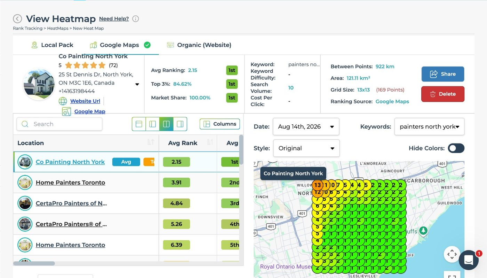
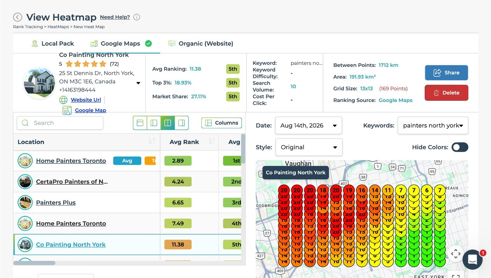

The local search build for a North York painter
North York, Ontario
Co Painting is a painting company working the North York side of Toronto. Below are both grid scans for its core search on the same day, exactly as they read in LeadSnap, and how the work behind it is structured.
The result
First on the tighter grid, fifth once it stretches to Vaughan
Rank is not one number. Google answers the same search differently depending on where the person is standing. So it gets measured point by point across a grid.
These are the two LeadSnap scans for Co Painting, shown the way they come off the dashboard. Same day, 14 August 2026. Same keyword, painters north york. Same ranking source, Google Maps. Same 13 x 13 grid of 169 points. Each pin is one search point, and the number on it is the position that point returned. The one thing that changes is how much ground those 169 points are spread over.
Over the tighter grid, 121.11 km² running east from the North York edge across Scarborough to the lake, the profile sits 1st with 100.00% market share and 84.62% of the points returning a top three spot, averaging 2.15. Spread the same 169 points over 191.93 km², shifted far enough west to take in Vaughan and Woodbridge, and it sits 5th with 27.11% share, 18.93% top three and an 11.38 average. Same day, same keyword, same search.
That is the whole read. On both scans the strong points sit to the east and the ranking falls away the further west the grid reaches. Area is the first thing worth checking on anybody's screenshot, so both are stated here and both scans are on the page.


- Keyword scanned
- painters north york
- Grid
- 13 x 13, 169 points on both
- Scan date
- 14 August 2026
1st / 5th
Position in market
121.11 km² grid, then the 191.93 km² grid
100.00% / 27.11%
Market share
Share of the scanned market on each grid
84.62% / 18.93%
Top 3 coverage
Points of the 169 returning a top three spot
The challenge
Painters get picked from the map pack
When somebody wants a room painted they open Google. They look at the three businesses sitting at the top of the map. They call one. Everything under that block gets a fraction of the attention. For a local painting company the map pack is not a nice to have, it is the channel.
The trouble is that the map pack is not one result, it is thousands of slightly different results. Google answers the same search differently depending on where the person standing there is. A profile can look healthy from the shop address and fall off completely for somebody searching ten minutes up the road. So the work gets measured on a grid of points, not on a single rank. The gaps only show up once you scan it.
Painting is also a crowded, low barrier category. Franchise operators, lead brokers and national brands bid on the same searches and carry years of reviews behind them. An independent wins on relevance, proximity and prominence, not on budget. So the profile and the site have to be better organised than the competition's. Not louder. Better organised.
What we did
Profile, pages, citations, in that order
Google Business Profile first. Primary category, secondary categories, service list, service area, hours and description all get set the way Google reads them rather than the way an owner would naturally write them. Photos go up on a schedule and posts go out on a schedule. The profile is worked every week instead of being filled in once and left alone. Nothing on it is invented. Every service listed is a service the company actually sells.
The website second. A page for each service the company really offers, and a page for each neighbourhood it really covers. Area pages are written from real research into the area. Never spun from one template with the name swapped out. Near duplicate pages neither rank nor convert. Schema, the internal link structure and index submission are part of the build rather than a cleanup job afterwards.
Interlinking third. Service pages, area pages and the hub get wired into one silo. Authority moves in a deliberate direction instead of pooling on the homepage. Every new page joins that structure the day it ships, and every page gets submitted for indexing rather than left to be discovered.
Citations after that. Name, address and phone are matched across the directory set so nothing on the open web contradicts the profile. Inconsistent listings are quiet drag on a profile and they are cheap to fix once the profile itself is settled.
Then scan the grid and read it. One keyword, scanned over more than one piece of ground, so the position can be checked rather than claimed and the edge of it shows. Where a client also runs paid search we run it alongside. Exact match, tightly themed ad groups, tracked calls. Judged on booked jobs, not clicks. Every figure published on this page is legible in the scan it sits with, and the area each scan covers is named. No ranking figure goes on this page without the scan it came off.
 Get started
Get started
Stop being invisible on Google
Send us your business. You get back a free three minute video: where you sit on the local map, and what is holding the position down.
One business per category per service area. No long term contract.